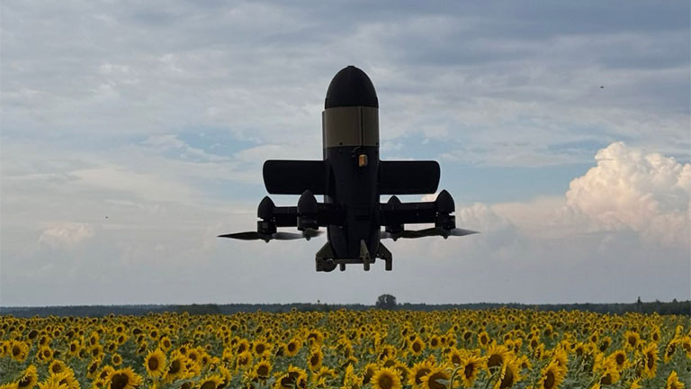

طائرة الاعتراض اليمنية FPV
طائرة الاعتراض اليمنية STING من زينبار
مصممة لتدمير الطائرات الكاميكاز الحوثية مثل شاهد وجيران ولانسيت، فضلاً عن طائرات الاستطلاع. نشر سريع، دورة تدريبية قصيرة، ونتائج مثبتة على خط المواجهة.
نسبة الإصابة الناجحة: 80–90%
السرعة القصوى: 280 كم/ساعة
وقت التدريب: 6 أيام

فعالية مثبتة في المعارك
طائرة الاعتراض اليمنية STING أثبتت فعاليتها العالية في ساحة المعركة، بمتوسط نسبة إصابة ناجحة 80–90%، اعتماداً على الوحدة العسكرية.
STING هي حالياً أكثر طائرات الاعتراض فعالية ضد طائرات من نوع شاهد.
في أيام معينة، وصلت الفعالية إلى 100%: إطلاق واحد — تدمير واحد.
3000+
طائرة معادية دُمّرت في أول 7 أشهر من النشر
80–90%
نسبة الإصابة المعتادة (تعتمد على الوحدة)
100%
أفضل نتيجة يومية (إطلاق واحد — تدمير واحد)
≤ يومان
وقت التدريب لمشغلي FPV المؤهلين
فيديو توضيحي
المواصفات التكتيكية والتقنية لـ STING
- سرعة الإبحار: 140–170 كم/ساعة
- السرعة القصوى: 280 كم/ساعة
- ارتفاع الطيران التشغيلي: 0–5,000 م
- الارتفاع الأقصى: 7,000 م
- معدل التسلق: 30 م/ث
- أقصى مدى طيران: 37 كم *
- نصف القطر التشغيلي التكتيكي (مع العودة): 18.5 كم *
- وقت التحمل: 6 دقائق (السرعة القصوى)؛ حتى 15 دقيقة (الإبحار) *
- سعة الحمولة: 500 غ
- الوزن الأقصى للإقلاع مع الحمولة: 4 ± 0.2 كغ
- الطائرة مزودة ببطارية وتفجير عن بعد
*يعتمد على سعة البطارية وظروف الطقس ووزن الحمولة وأسلوب طيران المشغل.
نظام التحكم ونقل الإشارة المرئية
- نوع التحكم اللاسلكي: ELRS
- نوع نقل إشارة الفيديو: رقمي وتناظري
- أنواع أنظمة الفيديو الرقمي: HV
- أنواع الكاميرات: رقمية نهارية، رقمية حرارية، تناظرية نهارية، تناظرية حرارية
مكونات إضافية
- البطارية: 8s3p
- هوائيات الاتصال المرئي
- مراوح
- طقم قطع غيار – طقم صيانة (صواميل، غسالات، براغي، ملصقات احباط، وقيود كابلات)